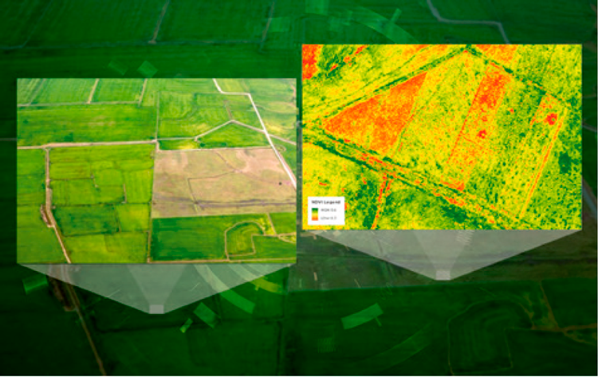
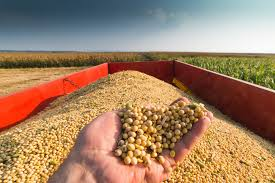
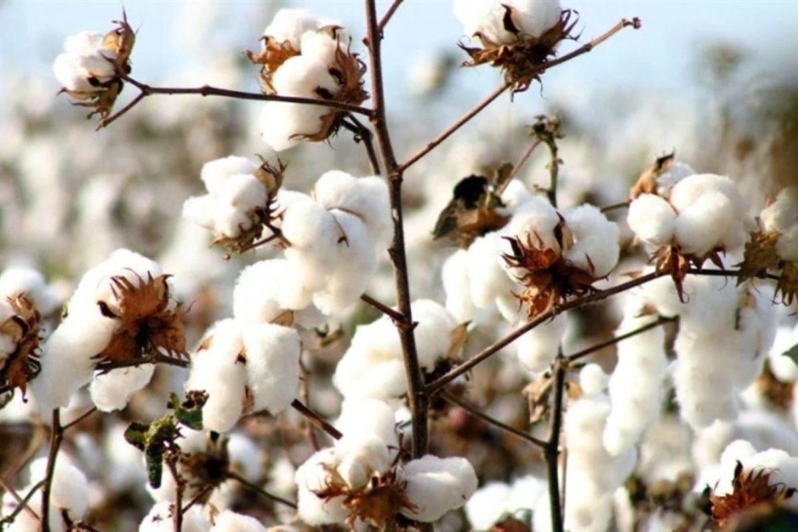
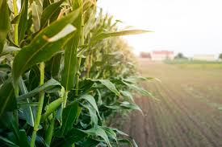

O NDVI (Índice de Vegetação por Diferença Normalizada) permite avaliar o vigor das culturas agrícolas, identificando áreas com estresse hídrico, falhas de desenvolvimento e perdas produtivas.

Base técnica e validação científica por sensoriamento remoto

Análise espectral e comportamento vegetativo

Monitoramento agrícola por sensoriamento remoto

Indicadores de produtividade e vigor vegetativo